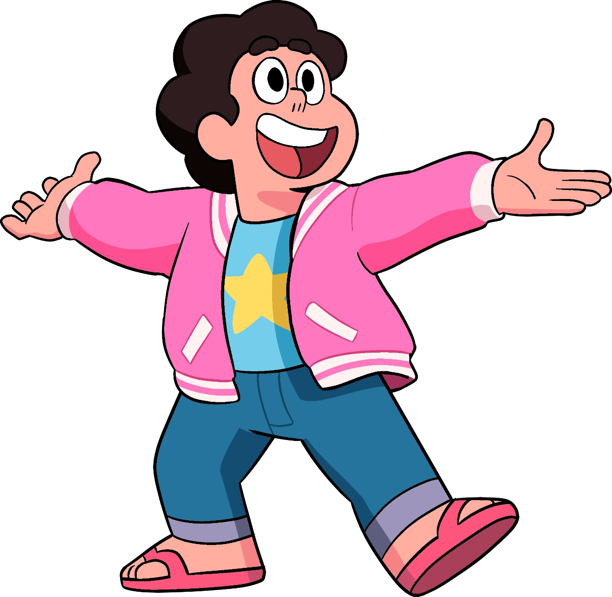

Steven Universo
Steven Universo é uma série animada que acompanha Steven, um garoto metade humano, metade "gem", criado por três Gems guerreiras chamadas Garnet, Ametista e Pérola. Juntos, eles protegem a Terra enquanto Steven aprende sobre seus poderes herdados de sua mãe, a lendária Rose Quartz. A série explora temas como identidade, amor, e aceitação, além de promover empatia e inclusão através de aventuras e conflitos emocionais. Conhecida pela abordagem sensível e inovadora, Steven Universo cativou o público com sua narrativa profunda, trilha sonora marcante, e representação de relacionamentos diversos.
